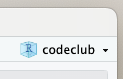
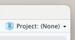
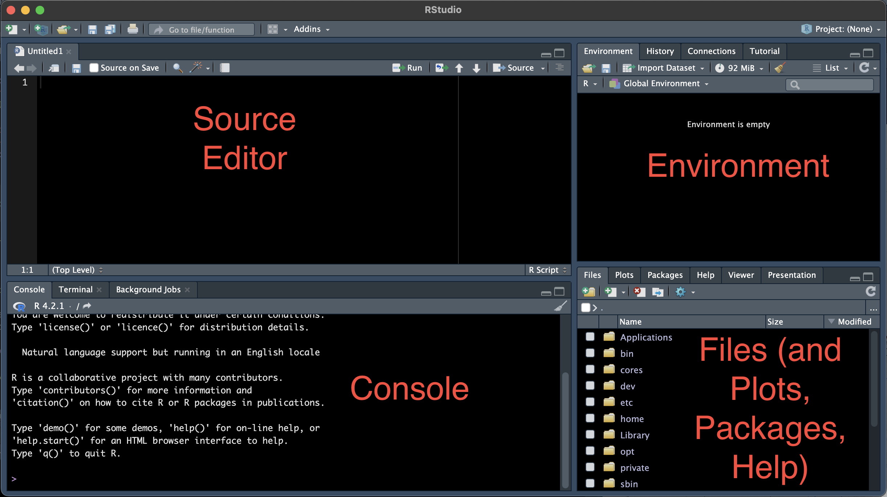

203 /R Basics 2: Scripts and Objects
r-basics
1 Introduction
Recap of last week
Last week, we installed R and RStudio, learned about the distinction between the two, familiarized ourselves with RStudio, learned about “working directories” and RStudio Projects, and had our first interactions with R by using it as a calculator.
Learning objectives for today
A little more basic interaction with R: missing prompts and character strings
Writing code in R scripts instead of the console, and commenting your code
Using and naming R objects, and (not) saving your environment
Setting up
If you created an RStudio Project for Code Club last week, then be sure to have that Project open before we get started. When you start RStudio, it may well have already opened that project for you (check the top-right corner, and see the screenshots below) — if not, click File (top menu bar) > Recent Projects, and select your Project for Code Club from the list.


If you don’t have an RStudio Project, no worries. We’ll be saving a file today, but you can always save it in an appropriate directory on the fly.
2 A little more basic interaction with R
2.1 The R prompt, revisited
The > sign in your console is the R “prompt”. It indicates that R is ready for you to type something.
When you are not seeing the > prompt, R is either busy (because you asked it to do a longer-running computation) or waiting for you to complete an incomplete command.
Type the following into your console, and press Enter (called Return on a Mac, but you get the idea):
You should notice that your prompt turned into a +.
What is going on here? (Click for the answer)
R is waiting for you to finish the command, since you typed an incomplete command: something has to follow the division sign /.
While it was obvious here that our command was incomplete, you will often type incomplete commands without realizing you did so. Most commonly, you’ll have done things like forgetting a closing parenthesis ) or accidentally using an (extra) opening parenthesis (.
To get out of this situation, one option is to try and finish the command (by typing another number) — but here, let’s practice another option: aborting the command by pressing Esc.
2.2 Letting R print things back to us, and numbers versus characters
If we just type a number and press Enter…
203[1] 203… then R will simply print the number back to us.
It turns out that this is the default, implicit action R will perform on anything you type: under the hood, it is calling a function called print() (we’ll talk about functions in one of the next few sessions).
What if we want R to print back to us some text, which in programming lingo is called a “character string”?
FantasticError in eval(expr, envir, enclos): object 'Fantastic' not foundWhat seems to be going wrong? (Click for the answer)
Whenever you type a character string, R expects to find an object with that name (we saw our first object x last week, and will talk more about them today).
When no object exists with that name, R will throw an error.
We can get R to print character strings back to us, and use them in other ways, as long as they are quoted:
"Fantastic"[1] "Fantastic""Code Club"[1] "Code Club"So, R treats numbers and character strings differently: unlike numbers, character strings need to be quoted. This avoids confusion with objects and allows for special characters like spaces.
Numbers are of the data type
numeric(which can be subdivided intointegeranddouble)Character strings are of the data type
characterThere are a couple more data types, which we’ll go over soon.
3 R scripts
3.1 The editor pane
Jess showed us the four quadrants of RStudio last week:

One of those contains a “Source Editor” pane, as in a Text Editor. Here, we can open and edit all sorts of text files — including R scripts. This quadrant will disappear if you have no files open:
Create and open a new R script by clicking
File(top menu bar) >New File>R Script.
3.2 Why use a script?
An R script is a text file that contains R code.
So far, we have been typing commands directly into the R console. But it’s a good idea to write and save most of our code in scripts.
This helps us keep track of what we’ve been doing, especially in the longer run, and to re-run our code after modifying input data or one of the lines of code.
Interactive scripts
For those of you who are familiar with the notion of a script from other contexts or programming languages — saving our code as a script does not mean that we necessarily need to run the entire script all at once.
In R, it is instead most common to write and run code interactively, often line by line.
3.3 Saving the script
Let’s save this new script right away…
Click
File>Save As
… and give it a descriptive name like codeclub_02.R (you may want to put the script in a folder for Code Club). Make sure it has the file extension .R, which should also have been automatically suggested by the pop-up window.
File extensions
An R script is just a plain-text file and you could also save it with, for example, a .txt extension – this will not break the file, but does have drawbacks.
When you use a .R extension, your computer and RStudio alike will recognize it as an R script. In RStudio, this means you’ll get some formatting that helps when writing your R code, and it can even recognize and warn you about certain errors in your code.
3.4 Sending code to the console
If you write most of our code in a script in the Editor, as we recommended above, wouldn’t it be a hassle to execute it? Do we need to copy-and-paste the code into the console? Luckily not.
Start by by typing another simple calculation, this time in your R script:
203 / 2.54With the cursor still on this line of code in the script, press Ctrl + Enter (or, on a Mac: Cmd + Enter).
The code will be copied to the R console and executed (so you should see the result printed as shown below), and additionally, the cursor will move to the next line in the script.
[1] 79.92126Alternatively, you could click the Run button in the bar right above your script to execute a line of code, but we recommend using the keyboard shortcut.
Execution behavior
Note that it doesn’t matter where on the line your cursor is: Ctrl + Enter and the Run button will always execute the entire line unless you have selected only part of it. (And when you have selected multiple lines of code, it will execute them all.)
3.5 Commenting
You can use # signs to comment your code — see the example below:
Anything to the right of a
#is ignored by R, meaning it won’t be executedYou can use
#both at the start of a line or anywhere in a line following codeIn your R script, comments are formatted differently so you can clearly distinguish them from code
# Divide by 2.54 to get the wingspan in inches:
203 / 2.54 # Original measurement was in cmComments are a great way to describe what your code does within the code itself, so use lots of comments in your R scripts!
Comments are useful not only for others that you may share your code with, but also for yourself when you look back at your code a day, a month, or a year later.
4 R Objects
4.1 Assigning stuff to R objects
As we briefly saw last week, we can assign a value to an object with the assignment operator <- (a smaller-than sign < followed by a dash -)1 — for example:
wingspan_cm <- 203
conversion <- 2.54Type that into your script, and use Ctrl/Cmd + Enter to send it to the console (R will not give you any output unless the assignments fail).
Recall also that the objects you create get added to your “environment”, which RStudio shows in the Environment tab in the top-right panel — check that wingspan_cm and conversion are indeed there.
After you’ve assigned a number to an object, you can use it in calculations like so:
wingspan_cm / conversion[1] 79.92126Or, similarly:
wingspan_inch <- wingspan_cm / conversion
wingspan_inch[1] 79.92126When you execute code with objects, then under the hood, R substitutes the object name that you provide by its contents. In other words, the object is just a reference to the underlying value(s).
“Object” is a general term that encompasses R items of any size or complexity:
Objects can also contain character strings, or collections of numbers or character strings (including in table or matrix format), and functions.
The above does not mean that “anything goes” — R distinguishes between a limited number of “data structures”, each with their own defined structure. We’ll learn about the most important ones next week.
Technically, the objects we created so far are vectors, which are more commonly thought of as containing a series of values, but in R, can have a length of one2.
How the Environment tab shows your objects
In the Environment tab, RStudio will group your objects. It is listing vectors under a heading with “Values”.
More complex data structures like tables (called “data frames” in R) would be under “Data”.
4.2 Object names
Objects can be given almost any name such as x, current_temperature, or subject_id. Some pointers on object names:
Because R is case sensitive,
wingspan_inchis different fromWingspan_inch!An object name cannot contain spaces — so for readability, you can separate words using:
- Underscores:
wingspan_inch(this is called “snake case”, which we often use in Code Club) - Periods:
wingspan.inch - Capitalization:
wingspanInchorWingspanInch(“camel case”)
- Underscores:
You will make things easier for yourself by naming objects in a consistent way, for instance by always sticking to your favorite case style like “snake case.”3
Object names can contain but cannot start with a number:
x2is valid but2xis not. (There are also some other restrictions that are beyond the scope of this introduction4.)Make object names descriptive yet not too long — this is not always easy!
4.3 Saving the environment
Recall that your environment contains all the R objects that you created. When you close R, it will probably ask you whether you want to save your environment (AKA workspace) — something like:
“Save workspace image to ~/.RData?”.
When you do so, the next time you start R, R will reload your environment so you can pick up right where you left off. While this may seem convenient, we recommend that you don’t do this.
Can you think of a reason why automatically saving and reloading your workspace may not be a good idea? (Click for the answer)
The main reason why this is generally not considered good practice relates to the idea that you should be able to reproduce your workspace (and more broadly speaking, your analysis) from the code in your script.
Remember that you can modify your workspace either by entering commands in the console directly, or by running them from a script – or even from multiple different scripts. Also, in practice, you often run lines in the script out of order, or write lines in the script that you don’t execute.
Therefore, if you “carry around” the same workspace across multiple different sessions, you run a greater risk of not having a reproducible set of steps in your script.
Generally, a better way of working in R than saving your entire environment is to use and save scripts (as we’ve seen today) and to save specific outputs such as tables and plots (as we’ll see soon).
To make RStudio stop asking you about saving your workspace, click Tools > Global Options > General and (un)check the boxes as follows:

Restarting R
Taking the ideas about reproducibility a step further, it can be a good idea to occasionally restart R in the middle of working on some code.
That way, you can check whether the code in your script is correct and complete, that you are not relying on code that is not in the script, and so on.
To do so, you don’t need to close and reopen RStudio itself: under Session in the top menu bar, you can click Restart R (and you should also see the keyboard shortcut for it in the menu bar: Ctrl/Cmd + Shift + F10.
5 Exercises
5.1 Exercise 1
What do you think the value of y will be after executing the following lines in R?
100160
x <- 50 # x is now 50
y <- x * 2 # y is now 100
x <- 80 # x is now 80, but what is y?
yCome up with an expectation, then run the code above and see if you were right. What does this tell you about “linkage” between objects in R?
Solution (click here)
Objects don’t get “linked” to each other at all in R.
In other words, y was really assigned the outcome of x * 2, which is 100, rather than its “formula”.
Therefore, y wasn’t (and couldn’t be!) “updated” after we changed the value of x, and continued to be 100.
5.2 Exercise 2
Given what you learned about printing unquoted character strings (e.g., running the “command” Fantastic will return an error), which of the following do you think would work:
session_topic <- "introduction"session_topic <- introductionTry both to see which works and what error you get for the other one.
Solution (click here)
The first of the two options was the correct one. In general, keep in mind that unquoted character strings represent objects whereas quoted character strings are “literals”.
Here, we wanted to assign the literal string "introduction" to the object session_topic — so the former should be quoted and the latter not.
An error is produced when you run the second option, because the object introduction does not exist.
Having run the code above, which of the following would have R print introduction?
"session_topic"session_topicSolution (click here)
The second option is the correct one: here, we want to have R print the value of the object session_topic, so we shouldn’t use quotes.
Finally, do you think the following code would successfully add 5 and 7? If not, what might happen instead?
x <- "5"
y <- "7"
x + ySolution (click here)
In the code above, the “numbers” are saved not as numbers (in R lingo: as a numeric) but as character strings.
R can’t add character strings, so it will return an error. (Perhaps you expected it to combine/“concatenate” the two strings in some way — this is in fact what Python would do.)
By the way, in case you were wondering: the code above is completely equivalent to simply running "5" + "7".
Attribution
This was modified after material from The Carpentries, especially from this Data Carpentry workshop and this “R for Ecology” workshop.
Footnotes
In RStudio, typing Alt + - will write
<-in a single keystroke. Note that you can also use=as an assignment operator (the common symbol in other programming languages!), but that symbol can have other meanings, so we recommend sticking with the<-combination.↩︎Objects that contain a single value are a distinct data structure called “scalars” in some languages, and are more informally also called “variables”.↩︎
It is also recommended to use nouns for variable names, and verbs for function names. For more, two popular R style guides are Hadley Wickham’s and Google’s.↩︎
For example, there are some names that cannot be used because they are the names of fundamental keywords in R (e.g.,
if,else,for, see here for a complete list).In general, it’s also best not to use the names of existing functions, even though this is possible.↩︎